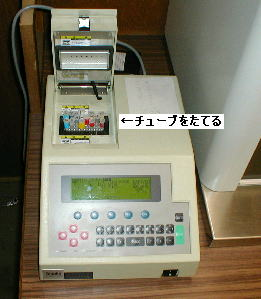

東工大・山村研 公開実習 (2002/9/19-21): よっぱ遺伝子実験
背景
今回、この公開実習に参加させていただいた山村研は主に、学習、GA、分子コンピューティング、バイオインフォマティクスを研究している研究室です。
研究室には情報系出身者と、生物系出身者がおり、研究室にはいると、情報系は生物を、生物系は情報を勉強します。実験の講師をしていただいた若林さん（D3）と松田さん（M１）は生物系の出身で、現在は分子コンピューティングの実験をふくめた研究をされているようです。
この実習は、もともと、研究室にはいってきた情報系の学生のためにおこなわれていたもので、今回、これを外部の人間に提供する試みです。集まった参加者は学生５人＋社会人４人で、すべて生物系以外の出身者です。
実習は、講義と実験があり、講義のほうでは実験の背景となる分子生物学の基礎的な話題についての話があり、そのあと（あるいは実験のあいだの待ち時間）、実験がおこなわれます。
実験内容
ＡＬＤＨ２遺伝子はアルコールがまず分解されてできるアセトアルデヒドを分解するタンパクを作る遺伝子。
コレが正常（Ｎ）か不活性（Ｄ）かを調べる。両親からひとつづつもらっているはずなので、ＮＮ、ＮＤ、ＮＮの３つのタイプが存在する。
ＡＬＤＨ２の配列上の一塩基のバリエーションで正常か非活性かがきまる。（これがSNP？）
この実験ではますＡＬＤＨ２上のこの配列を含む配列をＰＣＲで増やし、活性の時にだけ切れるような制限酵素を使って、切れるかどうかを調べる。切れた場合には長さが変わるはずなので、これをゲル電気泳動で検出する。
- 髪の毛からＤＮＡをとりだす （細胞を壊してＤＮＡをとりだす）
- ＰＣＲでＤＮＡの目的の部分を増幅する
- 増幅されたＤＮＡに制限酵素を作用させる
- ゲル電気泳動で制限酵素によってＤＮＡが切れたかどうかをチェック
- [形質転換] ついでに２で増幅されたＤＮＡをベクターにつないで、大腸菌にいれてみる
- ピペット： 最大１０００μｌ、２００μｌ、２０μｌ、２μｌなどあり、それぞれダイヤルで吸い上げる量を調節できます
- チューブに薬などを入れる際には、一回ごとに先っちょをつけかえます（使い捨て）
- PCR

- 遠心分離
- インキュベーター（保温装置）
- ゲル電気泳動マシン

- 入れる
- 電気泳動後にスキャナでとりこむ
- 取り込むとこんな感じ
- 制限酵素で切れない場合、DNA断片は長いのであまり移動せず、したのほうにバンドがでる。切れる場合、２本の長さの違う短いDNAになるので、より移動した２本のバンドがでる。僕は片方切れて、片方切れてないので２つのパタンが同時に出た。日本人の５０％がこのパタンらしい。
- 自分のDNAを大腸菌にいれてみる。自分のDNAを入れたベクターを大腸菌に組み込んで、それを一晩かけて増やす。
- 大腸菌のコロニーは、確認不可でした。
- 一回仕込むと、待ち時間は結構長い（数十分待つとか）。その間はけだるい雰囲気が流れる。こんなことをあと一週間も続けてたら、ある種の連帯感がうまれてしまうかも。
感想
- なんとなくではあるが、どんなに苦労してデータがでてくるのか、実際の生物のひとの気持ちが少し分かった気がする。こういう、実際の現場の雰囲気を理解するのは、データを解析する立場でも大切なことであると思う。
- いや、ほんと面白かったですよ、まじで。（準備とか、いたれりつくせりだったのもあるとおもうけど）
back